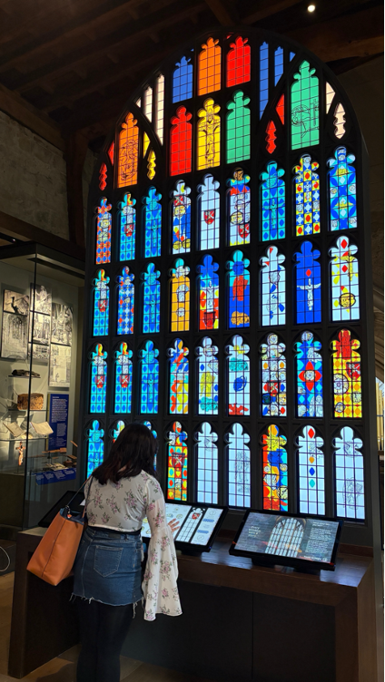
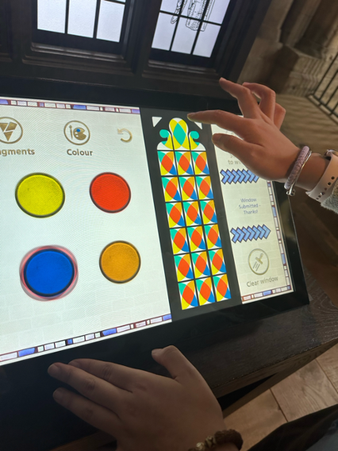
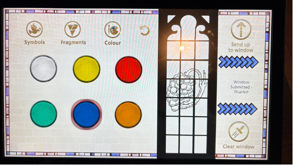
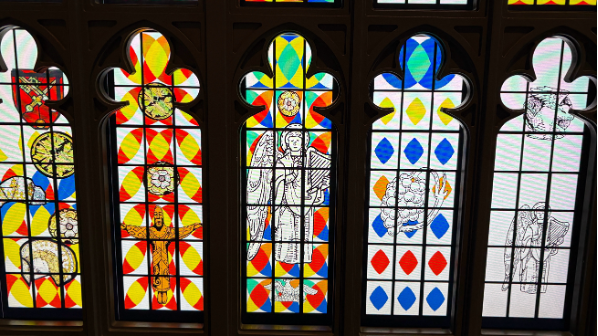

During a visit to Winchester Cathedral, I had the opportunity to engage with an interactive installation at the “Kings and Scribes: The Birth of a Nation” exhibition. It invited visitors to recreate their own version of the West Window, one of the cathedral’s most iconic and emotionally resonant stained-glass windows.

The interactive interface is designed to be user-friendly with simple and intuitive operations. Each windowpane is divided into numerous small sections, allowing users to freely fill them with different colors.

The system also provides some preset patterns that users can choose to incorporate into their designs.

Once the window design is completed, a short animation effect appears on the screen: a beam of light sweeps upward from below, and then the user’s work is displayed in one of the columns of the simulated window.
Here’s an interesting anecdote: We initially didn’t realize those white patterns were also paintable. My friend and I both thought the patterns were fixed, so although we filled our window design with plenty of colours, the pattern parts remained white. It wasn’t until we accidentally clicked on a pattern that we discovered they could actually be coloured. I think the system could provide a bit more interactive guidance, like clearly indicating “Patterns can also be coloured,” which would help users better understand all the operation options while creating.
Overall, this experience not only deepened my understanding of the West Window and its historical context but also inspired me to think about how digital interaction and spatial narrative enable public participation in the re-creation and inheritance of cultural heritage. It’s a wonderful attempt that integrates education, participation, and creativity.

Reflection
In the process of experiencing the interactive stained glass at the “Kings and Scribes” exhibition, I gained valuable inspiration for my Winchester Cathedral AR project. The exhibition not only allowed me to digitally reconstruct the West Window but also made me realize how subtle interactive designs and visual feedback impact user engagement and understanding.
My AR project aims to overlay the historical appearance of the cathedral onto the real building, creating a spatial experience of temporal layers. When seeing my designed stained glass lit up in the light animation, I realized that when users’ creativity is embedded in historical scenes, it generates a strong emotional connection. This moment also prompted me to think about how to evoke similar emotional resonance in my AR experience for example, enabling viewers to see vanished or reconstructed architectural fragments (such as the original model of Chester) through their phone cameras and overlap them with the present scene.
Additionally, I recognized the importance of clear interactive prompts. Just as I initially didn’t realize the white patterns were paintable, if certain functions in my AR project aren’t intuitive, users might miss key experiences. This reminds me to strengthen guidance in future designs, such as clearly marking trigger areas or emphasizing changes through animations.
Overall, the exhibition deepened my understanding of how digital media can both pay homage to history and reinterpret it, while also encouraging me to balance free interaction with structured guidance, so that audiences aren’t just observers of history, but true participants in it.